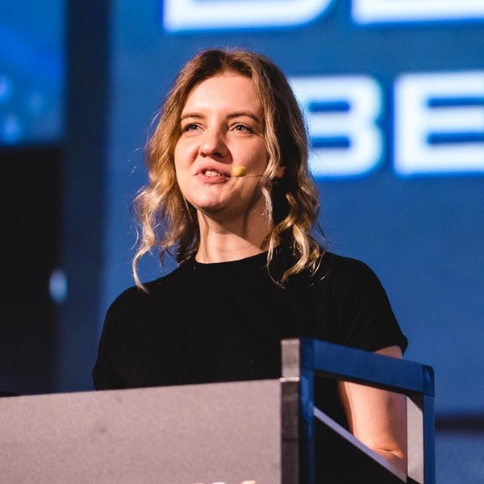

March 28, 9:00 AM GMT
 Europe, Middle East, and Africa
Europe, Middle East, and Africa
RSVP Now
Agenda
| Schedule | Session | Speakers |
|---|---|---|
| 28-Mar-24 02:00 02:05 AM | Welcome to JDConf EMEA | Host: Sandra Ahlgrimm, Microsoft |
| 28-Mar-24 02:05 02:30 AM | Java Meets AI: How to Build LLM-Powered Applications with LangChain4j | Lize Raes, Open Tide |
| 28-Mar-24 02:30 03:00 AM | Sparking Developer Joy: Elevating Developer Experience with VSCode Java |
Nick Zhu, Microsoft
Mohit Suman, Red Hat
Roland Grunberg, Red Hat
|
| 28-Mar-24 03:00 03:30 AM | Mastering Testcontainers for Better Integration Tests | Oleg Šelajev, AtomicJar |
| 28-Mar-24 03:30 04:00 AM | Semantic Kernel for Java | Rory Preddy, Microsoft |
| 28-Mar-24 04:00 04:30 AM | What's Coming in Jakarta EE 11? | Reza Rahman, Microsoft |
| 28-Mar-24 04:30 05:00 AM | Fast And Lightweight Spring Boot Applications With GraalVM | Alina Yurenko, Oracle |
| 28-Mar-24 05:00 05:25 AM | How to Keep Your Spring Boot Projects Up-to-Date | Martin Lippert, Broadcom |
| 28-Mar-24 05:25 05:30 AM | Closing Remarks | Sandra Ahlgrimm, Microsoft |
Speakers

Alina Yurenko
Developer advocate for GraalVM at Oracle Labs
Alina Yurenko is a developer advocate for GraalVM at Oracle Labs, a research & development organization at Oracle. She loves both programming and natural languages, compilers, and open source.

Lize Raes
Software Engineer at Open Tide
Lize Raes is a Senior Software Engineer and Head of AI at a Swiss company specializing in software for drug discovery and gene technology. In parallel, she develops LLM-powered apps and is a core member of the LangChain4j team. Lize loves using technology to solve societal issues. This has driven her in the past to work as a cochlear implant researcher at Ghent University, to develop a COVID-19 prognosis model and advise the Belgian government, and to engage as a committee member for the CNCF + UN hackathon. In her free time, you will find her behind the piano or in her woodworking atelier.
Martin Lippert
Spring Tools Lead, VMware / Broadcom
Martin works at VMware on developer tooling for the Spring and Spring Boot. He co-leads the team that ships all the Spring Tools for Eclipse, Visual Studio Code, Theia, and more.

Mohit Suman
Senior Product Manager, Red Hat
Mohit Suman is based out of beautiful country India. He works as a Senior Technical Product Manager at Red Hat, Developer Experience. He holds experience in Product Management, Software Engineering and Architecture in fields ranging from large-scale distributed computing and developer productivity.
Nick Zhu
VS Code, Java development, Cloud-native, Microsoft
Developer at heart.
Oleg Šelajev
Head of Developer Relations, AtomicJar
Oleg Šelajev is a head of developer relations at AtomicJar working on making local development and testing bring joy. Developer. Java Champion. Docker captain. Loves all languages.

Reza Rahman
Principal Program Manager, Java on Azure at Microsoft
Reza Rahman is Principal Program Manager for Java on Azure at Microsoft. He works to make sure Java developers are first class citizens at Microsoft and Microsoft is a first class citizen of the Java ecosystem. Reza has been an official Java technologist at Oracle. He is the author of the popular book EJB 3 in Action from Manning Publishing. Reza has long been a frequent speaker at Java User Groups and conferences worldwide including JavaOne and Devoxx. He has been the lead for the Java EE track at JavaOne as well as a JavaOne Rock Star Speaker award recipient. He was the program chair for the inaugural JakartaOne conference. Reza is an avid contributor to industry journals like JavaLobby/DZone and TheServerSide. He has been a member of the Java EE, EJB and JMS expert groups over the years. Reza implemented the EJB container for the Resin open source Java EE application server. He helps lead the Philadelphia Java User Group.

Roland Grunberg
IDE Extensions Team Lead, Red Hat
Software developer, and IDE Extensions team lead at Red Hat. I help maintain the popular Java language support extension for VS Code.

Rory Preddy
Principal Cloud Advocate, Microsoft
Rory works in the Developer Relations team at Microsoft as a Principal Cloud Advocate. Cloud Advocates use their deep research skills to help professional cloud developers discover and successfully use Microsoft’s platforms. A seasoned speaker whose talks are both meaningful and humorous, Rory speaks around the world empowering developers to achieve more.
Sandra Ahlgrimm
Senior Cloud Advocate, Microsoft
Sandra worked at some Axel Springer Companies where she learned a lot about coding and DevOps in large companies. That knowledge helped her a lot in setting up the automated infrastructure and DevOps pipeline plus the agile momentum in the StartUp she worked afterwards. In her first year at Microsoft, she helped several companies with their container, Kubernetes, DevOps, agile processes before moving 5 years ago to the cloud advocacy team where she keeps focusing on open source technologies and heavily in Java.
Stay connected
Follow the Microsoft for Java developers blog and Java at Microsoft for the latest news and updates about JDConf.
Follow the event at #JDConf